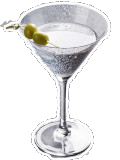

He knows just how I like my martini, full of alcohol.- Homer Simpson
Is is more accepted that the Martiri is derived from the Martinez, and the Manhattan cocktails.
The story goes along the lines of; gold miner that struck rich, or maybe didn't, ordered a pick-me-up the drink 'A Martineze Special' in a bar, possibly on his way to Martinez.
Another claim is it originated in New York's Knickerbocker Hotel.
A further origin possibility is The drink was named after “Martini & Rossi” vermouth.